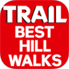
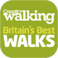
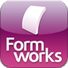

<div role="main" class="ui-content">

    <div id="fulltext">
        <p>Here's a selection of the mobile apps I've either written or contibuted towards:</p>
        
        <h3>2017: Flourishzone</h3>
        <p class="subtitle">This app was built using React Native.</p>
        <p>The app is designed to improve a user's personal or team development and wellbeing by encouraging regular reviews and self-appraisals and the sharing of their feelings towards a number of self-worth statements.</p>
        <p class="info">The app is currently open only to invited users/organisations.</p> 
        <p class="info"><a href="https://itunes.apple.com/gb/app/flourishzone/id1265092510?mt=8" target="_blank"></a></p>
        <hr/>

        
        <h3>2015: HaemPack - Version 2 (iPad)</h3>
        <p class="subtitle">The app and CMS data service has been designed and written by myself.</p>
        <p>This is an updated version to that previously released. It included a number of additional fetures, including Calendar integration.</p>
        <p class="info">The app is distributed privately by Pfizer so is not available on the App Store.</p>
        <hr/>

        
        <h3>2014: Rheumatoid Arthritis Objection Handler (iPad)</h3>
        <p class="subtitle">This standalone native app has been built entirely by myself from a series of supplied wireframes and screen designs.</p>
        <p>The app is designed to provide arguments to dispel potential objections to a particular drug supplied by Pfizer for the treatment of rheumatoid arthritis. It also identifies questions or comments about competitive drugs.</p>
        <p class="info">The app is distributed privately by Pfizer so is not available on the App Store.</p>
        <hr/>

        
        <h3>2014: HaemPack (iPad)</h3>
        <p class="subtitle">The app and CMS data service has been designed and written by myself.</p>
        <p>This app is designed to give doctors and nurses up-to-date information about haemophilia, its treatment, current research papers, news and information about medical conferences about the disease. The app is designed to download the data from a CMS to ensure that it is constantly updated with the latest news and conference information related to haemophilia.</p>
        <p class="info">The app is distributed privately by Pfizer so is not available on the App Store.</p>
        <hr/>

        
        <h3>2013: Trail Magazine, Britain's Best Hill Walks (iPhone)</h3>
        <p class="subtitle">Both the app and the back-end data service were designed and written by myself.</p>
        <p>This is a companion app to the Country Walking app above and its functionality is very similar. However, it is aimed at the more serious walker so had slightly more detailed information.</p>
        <p class="info">The app is no longer available on the App store.</p>
        <hr/>

        
        <h3>2013: Country Walking, Britain's Best Walks (iPhone)</h3>
        <p class="subtitle">Both the app and the back-end data service were designed and written by myself.</p>
        <p>This app is similar to the AA walking app but with many additional features such as waypoint following which allows the app to track the user as they walk along a trail and then prompt them with waypoint descriptions as they reach locations along the route. The app was designed to be a partner app to "Country Walking" magazine, published each month by Bauer Media. Each month, different walks are featured and are dynamically added to the app each month.</p>
        <p class="info">The app is no longer available on the App store.</p>
        <!--<p class="info"><a href="https://itunes.apple.com/gb/app/country-walking-britains-best/id623197765?mt=8" target="_blank"></a></p>-->
        <hr/>

        
        <h3>2012: iPresent (iPad)</h3>
        <p class="subtitle">Worked in a team of 5.</p>
        <p>This app is designed to allow companies to control and manage the distribution of presentation materials to their staff, wherever they are in the world. The app can force updates to be pulled down from the cloud to ensure that the same corporate message is being delivered worldwide. It can also be told to disable presentations of sales material or price lists that are no longer applicable or valid.</p>
        <p class="info">See: <a href="http://www.ipresent.com/">http://www.ipresent.com/</a> for more details.</p>
        <hr/>

        
        <h3>2012: Formworks (iPad)</h3>
        <p class="subtitle">Worked in a team of 2.</p>
        <p>This app is designed to allow users to fill out paperless forms. The forms are created using a CMS and published to the users via the app. The app allows various data elements to be captured, including freeform text, numeric values, dates, signatures, photos, etc. and then store the results in a central database ready for analysis, all without the use of paper.</p>
        <p class="info">Further information about this app can be found on the Formworks web site <a href="http://www.digitalfieldsolutions.com/formworks/">here</a>.</p>
        <hr/>

        
        <h3>2011: Lexacom (Blackberry)</h3>
        <p class="subtitle">Worked in a team of 2.</p>
        <p>This app is designed to record dictations from the user and then send them to a central database where they would be transcribed by a central pool of typists.</p>
        <p>The app was written with BlackBerry WebWorks using JavaScript, HTML5 and CSS. The data was stored on the device using a HTML5 SQLite database.</p>
        <p class="info">The Blackberry app is no longer available but the iPhone version can be seen <a href="http://www.lexacom.co.uk/our-products/lexacom-mobile/">here</a>.</p>
        <hr/>

        
        <h3>2011/2012: AA Best Walks in Britain (iPhone)</h3>
        <p class="subtitle">The app was designed and written entirely by myself. The server-side code to communicate with the app was written with another team member.</p>
        <p>The app allows a user to view information about various published walks throughout the UK and purchase the GPX track-logs and background OS maps for use while following them, even when there is no phone signal or Internet connection. To do this, the mapping sent to the device in square 'chunks', where it is unzipped and cached for use at any time.</p>
        <p class="info">The app is no longer available on the App store.</p>
        <hr/>

        
        <h3>2011: Royal Ascot - Version 2 (iPhone)</h3>
        <p class="subtitle">This app was released in June 2010 for the 2010 meeting. It was designed and written entirely by myself; another team wrote the back-end server code.</p>
        <p>This was an update to the 2010 version and included an Augmented Reality feature, which allowed user to see where restaurants and bars were in an AR view.</p>
        <p class="info">The app is no longer available on the App store.</p>
        <hr/>

        
        <h3>2010: Ascot (iPhone)</h3>
        <p class="subtitle">This app was designed and written entirely by myself; another team wrote the back-end server code.</p>
        <p>The app was designed for all the other race meetings held at Ascot throughout the year, so it had different branding and slightly different functionality to the Ascot app.</p>
        <p class="info">The app is no longer available on the App store.</p>
        <hr/>

        
        <h3>2009/2010: Royal Ascot (iPhone)</h3>
        <p class="subtitle">This app was released in June 2010 for the 2010 meeting. It was designed and written entirely by myself; another team wrote the back-end server code.</p>
        <p>The app showed a list of all races for all race days, the runners and riders, live odds and race results - updated via Apple Push Notification System (APNS). It also included a map of the racecourse, together with selectable locations of restaurants and bars. 'Fun' features included Song sheets, 'Live reporter' (similar to a Twitter feed) and photos taken during the day of various events. A 'Hospitality' section included a list of restaurants, together with their menus, a timetable of events for each day, and a list of future events being held at Ascot. Finally, an 'Info' section showed up-to-date Travel, Weather, News and the current course going.</p>
        <p>A server managed the push notifications, together with the XML-based data feed and MSSQL database. In order to minimise the amount of data sent to the app and to enable the users to be able to use it when there was no connection, all the data was stored locally on the device. The data feed was also designed so that only updated information was sent.</p>
        <p class="info">This app is no longer available on the App store.</p>

    </div>

</div>